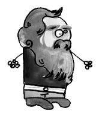

Muzaffer Ş. Başoğlu (1906-1988)
Sosyal psikolojinin kurucularındandır. Politik ve eleştirel psikolojinin de öncüllerinden olan Başoğlu, gruplar arası çatışma ve dayanışma süreçlerini inceleyen çalışmalarıyla anılır.
İstanbul Üniversitesi’nde okumuş ve mastır üstüne mastır yapmıştır. Bilahare Harward’tan doktorasını aldıktan sonra Ankara Üniversitesi’nde ders vermeye başlayan Şerif, Nazi hareketine karşı yaptığı konuşmalardan dolayı hapse atılmış ve Amerikan hükümetinin girişimleriyle serbest kaldıktan sonra yurt dışına çıkarılmıştır. Amerikalı bir hanımla evli olmasının sorun yaratacağını düşündüğü için bir daha ülkesine dönmemiştir.
Muzaffer Şerif Başoğlu dünyada Muzaffer Sherif ismiyle tanınır. 1988’de geçirdiği bir kalp krizi sonucu ölmüştür.
